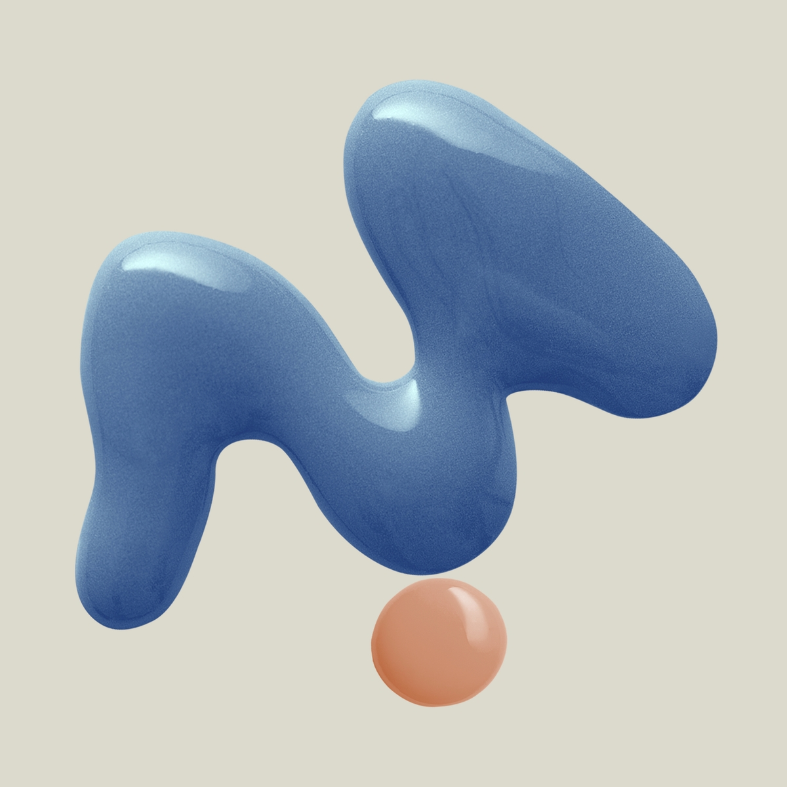
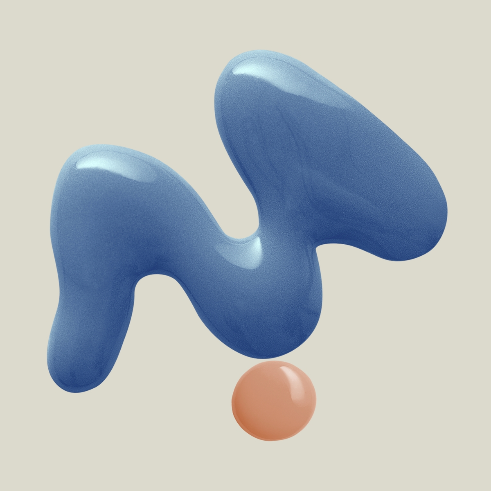

Activity-1: Some Objects to Contemplate
How many different uses can you imagine for each of these objects? Can you briefly describe and quickly sketch a few ideas?


The Year of Magical Thinking is Joan Didion’s account of the year following the death of her husband, writer John Gregory Dunne, and her attempts to make sense of her grief while tending to the severe illness of her adopted daughter, Quintana. As she tries to make sense of John’s death and her own changed identity, Didion discovers that grief is not what she expected it to be. Consumed by memories of the years they lived in Los Angeles, shortly after they married and adopted Quintana, Didion feels that she has entered a state of temporary insanity. Though cool and collected on the surface, she begins to believe that her wishes might have the power to bring John back. To this end, she refuses to give away his clothes and shoes, believing that her husband will need them when he returns to her. She calls this childlike belief that her thoughts and wishes can alter reality “magical thinking.”
Of course we are not embarked on anything like this, but we do want to generate some “magic” in our thoughts! So taking some inspiration from her “childlike belief” that can “alter reality”, let us hark back to our childhoods and see what we can do with these objects below:
How many different uses can you imagine for each of these objects? Can you briefly describe and quickly sketch a few ideas?
Where do you reckon you can “see” these shapes ? Can you briefly describe and quickly sketch a few ideas?
 
Images by rawpixel.com

Images by rawpixel.com
Scoring is comprised of four components:
*You might have noticed that the higher fluency the higher the originality (if you did “good for you!”) This is a contamination problem and can be corrected by using a corrective calculation for originality (originality = originality/fluency).
Both these activities are examples of exercises in divergent thinking. See the references for more information.
Guilford Test for Divergent Thinking: (Weblink)
Wallas-Kogan Test for Divergent Thinking: (Weblink)
Bobo Hjort, Drawing, Knowledge, and Intuitive Thinking: Drawing as a Way to Understand and Solve Complex Problems in Art and Complexity, J. Casti and A. Karlqvist (editors) © 2003 Published by Elsevier Science B.V.[PDF]
David Chen, Creative Paradoxical Thinking and Its Implications for Teaching and Learning Motor Skills(PDF)
Holyoak and Thagard, The Analogical Mind, (PDF)
Joshua Ferris, The Market Value of my Father, a metaphorical Short Story, (Web Link)